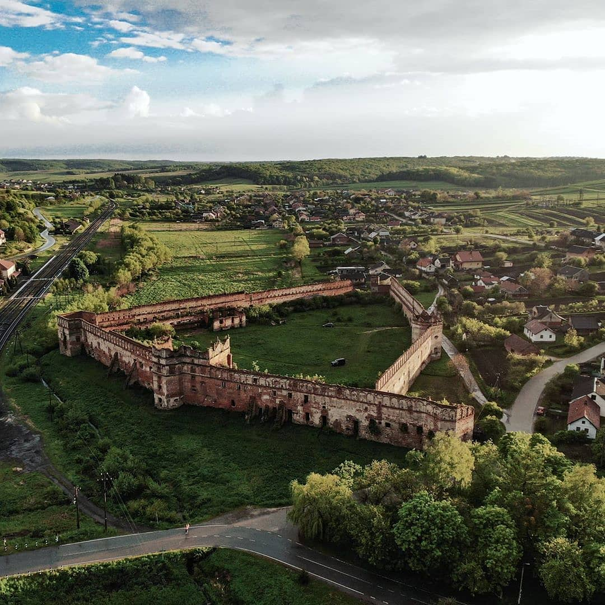

-
Високий замок у Львові
За́мкова гора́ (Княжа гора, гора «Високий Замок») — один з пагорбів у місті Львові, найвища точка міста — 413 м над рівнем моря. За австрійських часів її називали Пісковою горою, а після відвідин у 1851 році цісарем — горою Франца Йосифа.
-
Золочівський замок
Зо́лочівський за́мок — замок, пам'ятка історії та культури національного значення в місті Золочеві Львівської області в Україні. Музей-заповідник «Золочівський замок» — відділ Львівської галереї мистецтв. Замок входить до туристичного маршруту «Золота підкова Львівщини».
-
Старосільський замок
За́мок у Старо́му Селі́ (Старосі́льський за́мок) —пам'ятка архітектури XV–XVII століть, розташована в селі Старе Село (Львівський район, Львівська область). Завдяки своїй площі (2 га) замок вважається найбільшим на Львівщині.

Фортеця займає значну площу (2 га) та побудована у формі неправильного п’ятикутника близького до трикутної форми. -
Жовківський замок
Iдеальне ренесансне місто Жовква має чим дивувати. Це одне з історичних міст України. Місто-заповідник, це десятки пам’яток історії та культури, а також осередок міжнародного туризму. Головна домінанта цього історичного центру – це Жовківський замок.
Карпати
Ще до утворення карпатської геосинкліналі на місці сучасної гірської споруди Карпат і їхнього передгір'я в палеозойську еру існувало пасмо гір, що з'єднувало Свентокшиські та Судетські гори з Добруджею. Це давнє пасмо називають Пракарпатами. Внаслідок рухів земної кори Пракарпати були зруйновані, і на початку мезозойської ери на їхньому місці виникла майже рівнинна територія, близька до платформи.